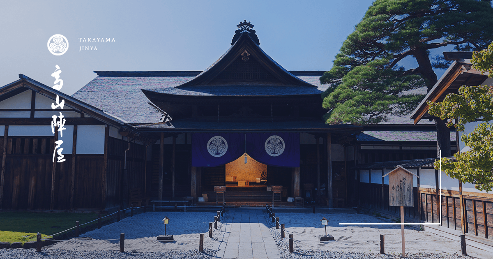
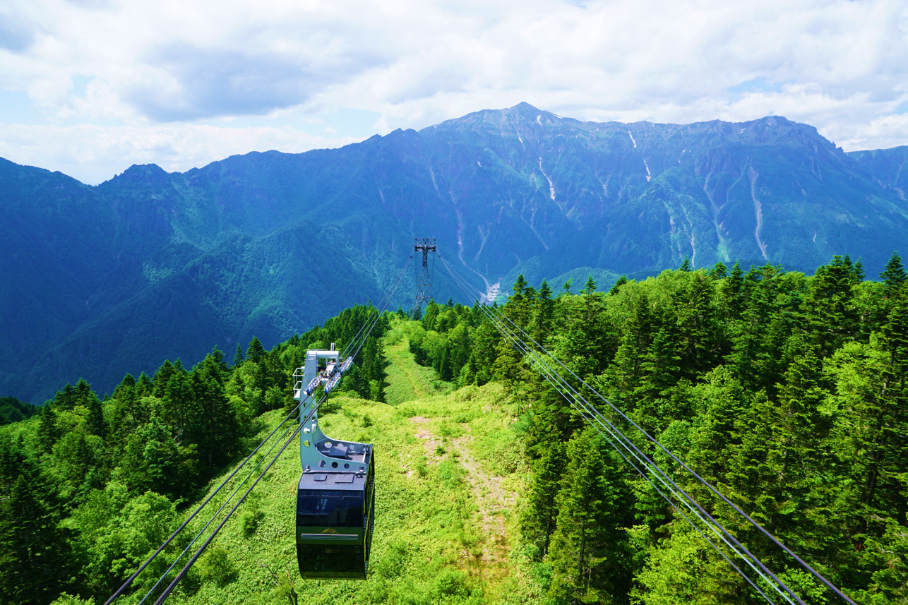
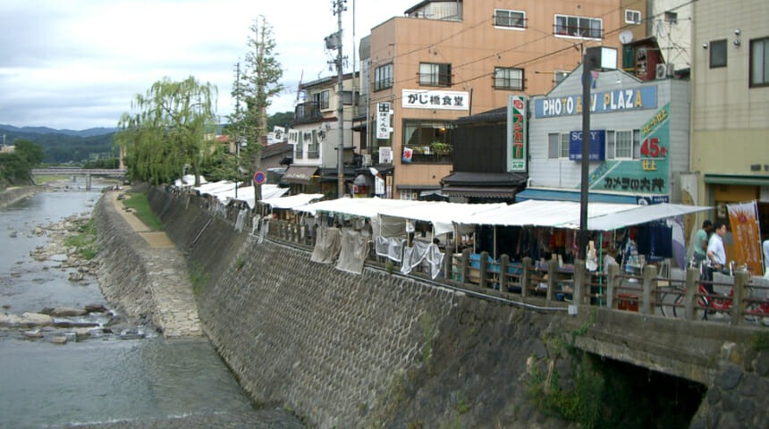

高山陣屋
江戸時代の代官所跡。歴史好きには必見のスポットです。
公式サイトはこちら新穂高ロープウェイ
日本唯一の2階建てロープウェイ。絶景を楽しめます。
公式サイトはこちら飛騨高山宮川朝市
地元の新鮮な野菜や工芸品が並ぶ朝市。活気あふれる場所です。
公式サイトはこちら江戸時代の代官所跡。歴史好きには必見のスポットです。
公式サイトはこちら日本唯一の2階建てロープウェイ。絶景を楽しめます。
公式サイトはこちら地元の新鮮な野菜や工芸品が並ぶ朝市。活気あふれる場所です。
公式サイトはこちら